Hytte på Oppdal
01Raust men kompakt i fjellheimen
Bolig · fritid · Nybygg · InteriørSe bildegalleri
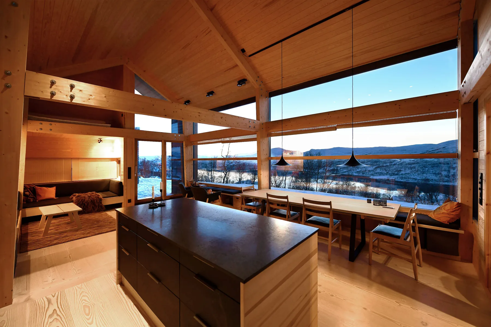
- Byggherre
- Privat
- Byggeår
- 2020
- Medarbeidere
- Kjetil Nordø
Om prosjektet
Fire bygninger danner et lite tun ved Skarvatnet: hovedhytta, et gjestehus, badstue og garasje. Synlig trekonstruksjon, store vinduer og et samlende allrom knytter fritidsboligen til fjellandskapet på Oppdal.
Bilder & tegninger14 bilder


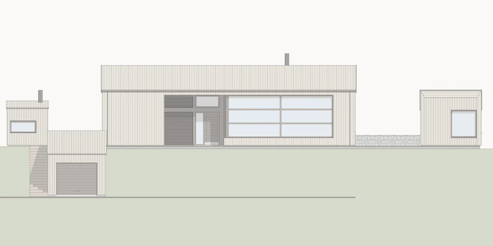
Forstørr
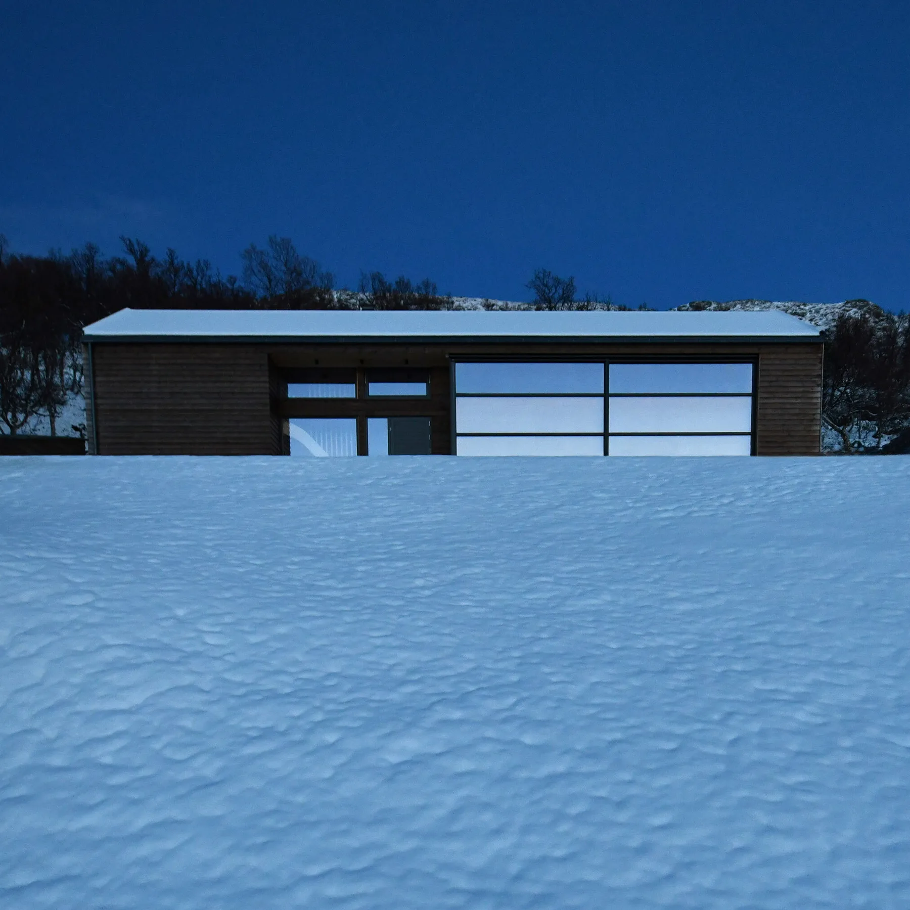
Forstørr
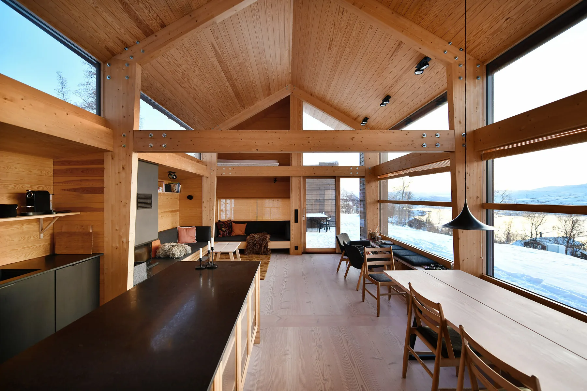
Forstørr
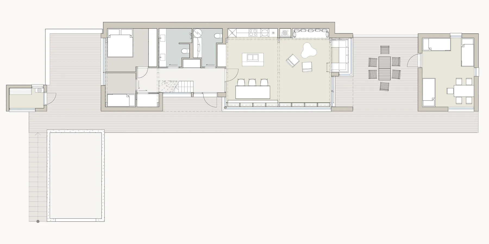
Forstørr
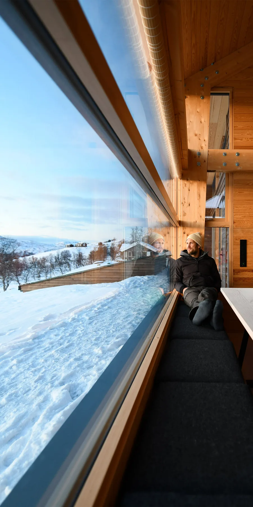
Forstørr
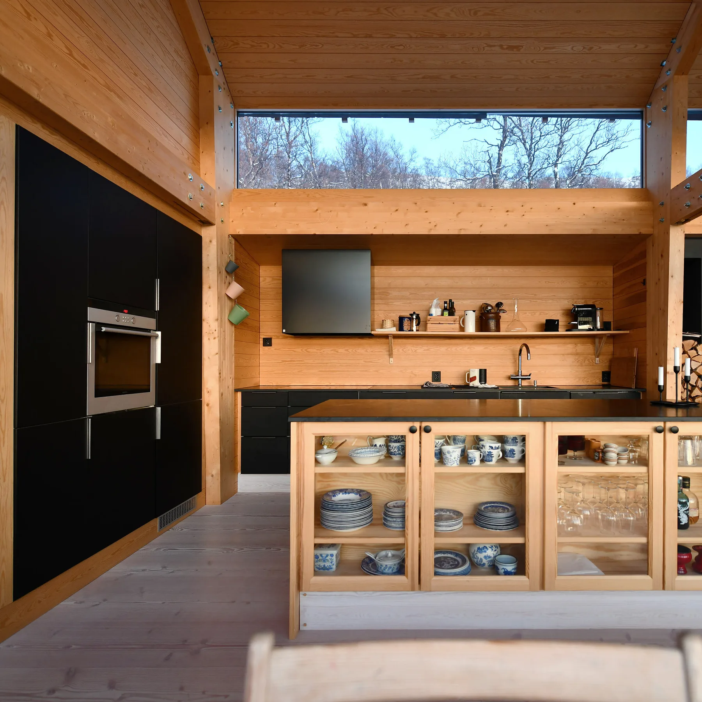
Forstørr
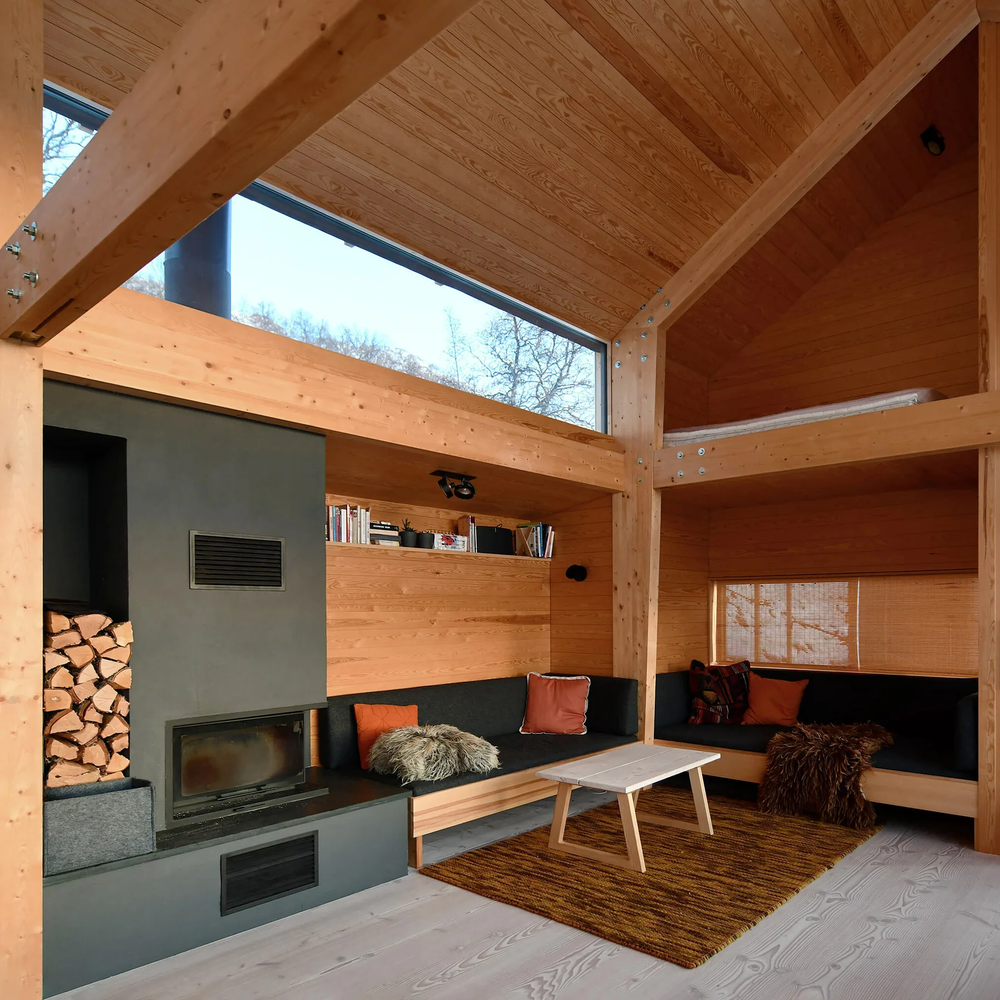
Forstørr
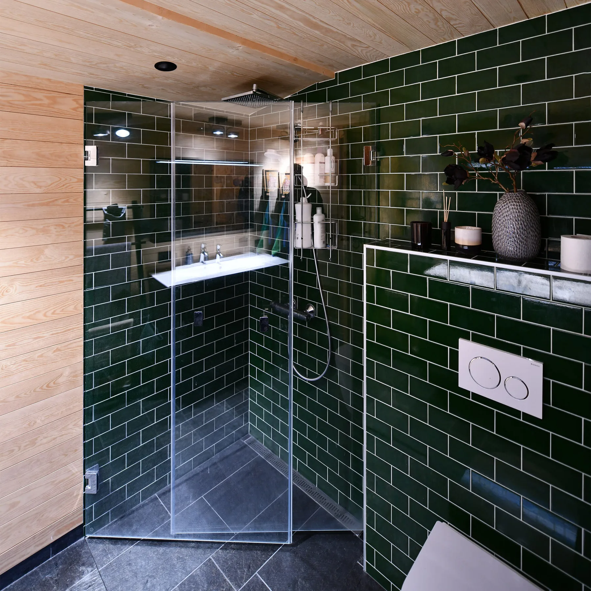
Forstørr
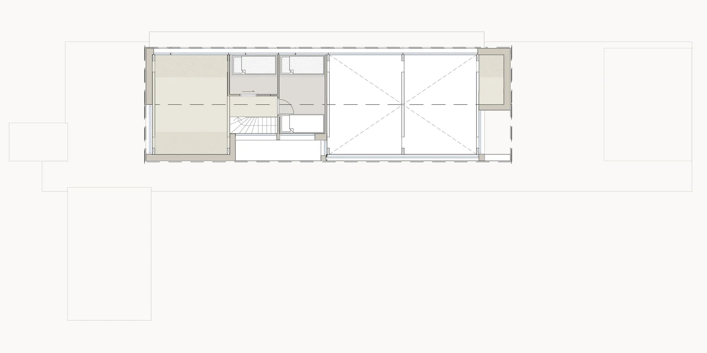
Forstørr
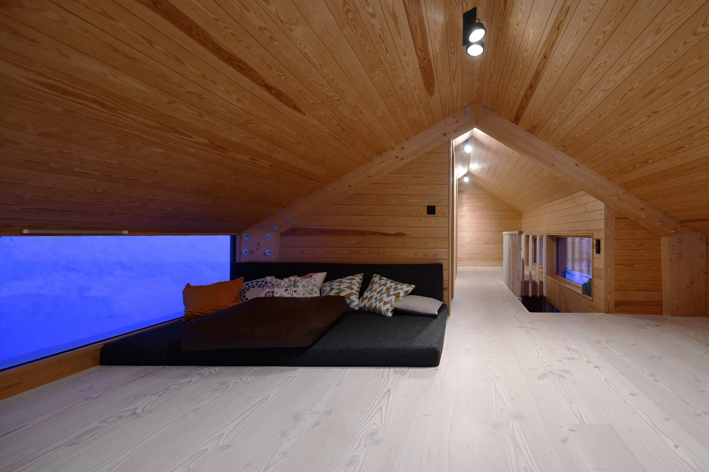
Forstørr
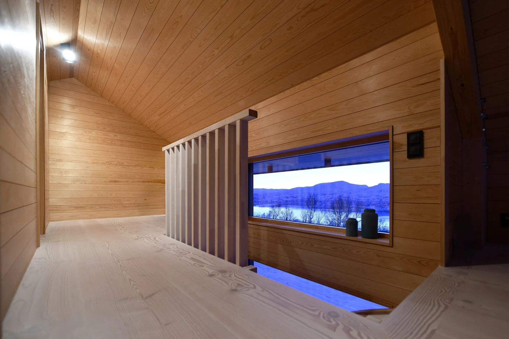
Forstørr
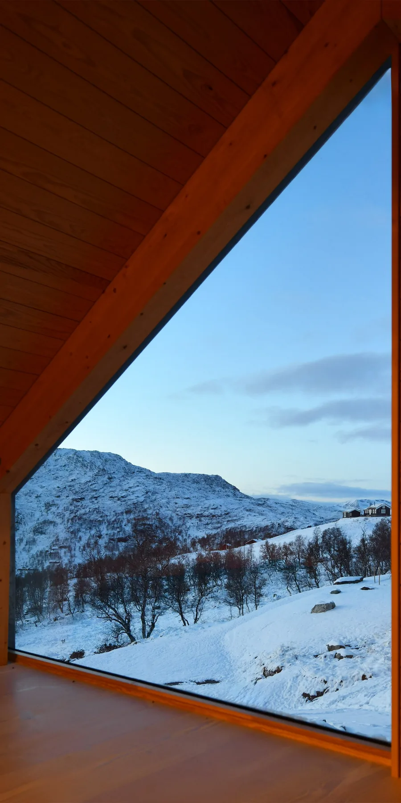
Forstørr
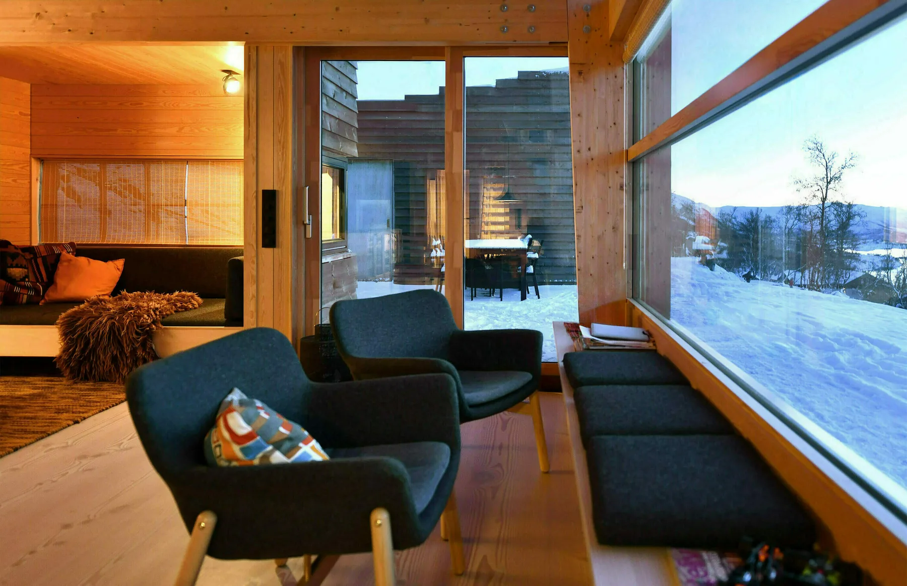
ForstørrLa oss begynne med en samtale